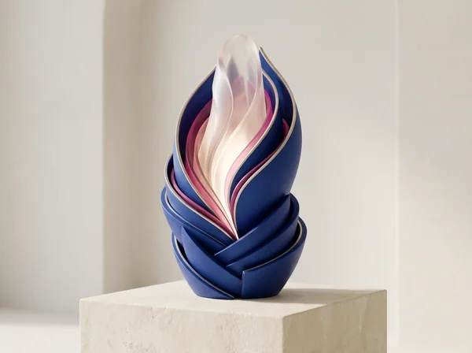

אפרת שכטר · באר שבע
NLP, טיפול רגשי והנחיית סדנאות לילדים ובני נוער
מומחית לטיפול רגשי בשיטת NLP ולהנחיית סדנאות חוסן ומיומנויות חברתיות לילדים ולבני נוער.
053-440-1616 באר שבע

אפרת שכטרNLP
אודות
אודות אפרת שכטר
מומחית לטיפול רגשי בשיטת NLP ולהנחיית סדנאות חוסן ומיומנויות חברתיות לילדים ולבני נוער.
לאורך חיי התמודדתי עם אתגרים ומשברים שדרשו ממני לפתח חוסן פנימי, חשיבה חיובית והתמדה. הדרך האישית שעברתי, יחד עם ההכשרה המקצועית, הובילה אותי למקום שבו אני נמצאת היום: ללוות ילדים ובני נוער בתהליכים רגשיים וחברתיים, ולתת להורים שקט נפשי בידיעה שילדיהם בידיים מקצועיות וקשובות.
הגישה הטיפולית
- 01יצירת סביבה בטוחה, עטופה, אמפתית ומכילה שבה הילד מרגיש בנוח להיפתח.
- 02מתן כלים פרקטיים ומעצימים המותאמים אישית לעולם התוכן של הילד/ה.
- 03חיזוק הדימוי העצמי, החוסן הנפשי והיכולת להתמודד עם אתגרי החיים.
מהו טיפול NLP?
Neuro-Linguistic Programming (ניתוב לשוני פיזיולוגי): גישה טיפולית ממוקדת המאפשרת להשפיע לחיוב על דפוסי חשיבה, שפה והתנהגות.
-
דפוסי חשיבה
המחשבות האוטומטיות שמובילות לפחד, לכעס או לביטחון.
-
שפה
המילים שהילד אומר לעצמו ולאחרים.
-
התנהגות
התגובות בפועל, בכיתה, בחברה ובבית.
טיפול רגשי פרטני (NLP לילדים ולנוער)
למי הטיפול הפרטני מתאים?
ילדים ובני נוער המתמודדים עם:
- 01
חוסר ביטחון עצמי, דימוי עצמי נמוך וביישנות.
- 02
קשיים וויסות רגשי, התקפי זעם, כעסים ופחדים.
- 03
חרדות ואתגרים רגשיים שונים.
- 04
הפרעות קשב וריכוז (ADHD).
- 05
קשיים חברתיים ויצירת קשרים.
טיפול וסדנאות
טיפול רגשי פרטני וסדנאות ומענים קבוצתיים
-
01

טיפול רגשי פרטני (NLP לילדים ולנוער)
תהליך קצר ממוקד ותוצאתי המקנה כלים לכל החיים.
ילדים ובני נוער -
02
סדנת כישורים חברתיים (NLP)
שיפור מיומנויות חברתיות, העצמת הילדים והקניית כלים ליצירת קשרים חברתיים מתמשכים בקלות וללא מאמץ.
ילדים/ות בני 5–11 -
03

סדנת חוסן נפשי
הקניית כלים להתמודדות חיובית עם אתגרים, שליטה במצבי לחץ, התאוששות מאתגרים רגשיים וחיזוק החוסן האישי במצבי שגרה וחירום.
ילדים ובני נוער בגילאי 7–18 -
04
סדנת הכנה לכיתה א'
חיזוק מיומנויות למידה מוקדמות ופיתוח חוסן רגשי לקראת המעבר המשמעותי מגן הילדים למסגרת הבית-ספרית.
ילדים/ות בגילאי 5–7 העולים לכיתה א'
מה אומרים ההורים והמטופלים
איך נראה התהליך? צעד אחר צעד
-
01
פגישת היכרות עם ההורים
המפגש הראשון הוא איתכם. נכיר, נבין מה הילד או הילדה חווים ומה מעסיק אתכם, ונגדיר יחד מטרות ברורות לתהליך.
-
02
תוכנית מותאמת אישית
על בסיס ההיכרות אני בונה תהליך מדויק לעולם התוכן של הילד. לא פתרון מדף, אלא דרך שמתאימה דווקא לו.
-
03
מפגשים חווייתיים עם הילד
כעשרה מפגשים פרטניים של משחק, יצירה, דמיון מודרך וכלים מעולם ה־NLP, כך שהילד מתגייס לתהליך ונהנה ממנו.
-
04
ליווי צמוד וכלים לחיים
לאורך כל הדרך אנחנו בקשר רציף. בסיום, הילד יוצא עם כלים שנשארים איתו גם מחוץ לחדר הטיפולים.
מהבלוג כלים להורים
-
![](data:image/svg+xml,%3csvg%20xmlns='http://www.w3.org/2000/svg'%20viewBox='0%200%20800%20500'%20role='img'%20aria-label=''%3e%3c!--%20Article%20illustration:%20the%20first%20school%20morning%20—%20a%20little%20backpack%20on%20the%20path%20to%20an%20arched%20door,%20the%20sun%20rising%20behind%20it.%20Brand%20palette;%20no%20people.%20--%3e%3cdefs%3e%3clinearGradient%20id='sky'%20x1='0'%20y1='0'%20x2='0'%20y2='1'%3e%3cstop%20offset='0'%20stop-color='%2314304a'/%3e%3cstop%20offset='0.55'%20stop-color='%233a3fa8'/%3e%3cstop%20offset='1'%20stop-color='%23f7508f'/%3e%3c/linearGradient%3e%3cradialGradient%20id='sun'%20cx='0.5'%20cy='0.5'%20r='0.5'%3e%3cstop%20offset='0'%20stop-color='%23fff4d6'/%3e%3cstop%20offset='0.45'%20stop-color='%23ffd28a'/%3e%3cstop%20offset='1'%20stop-color='%23ffd28a'%20stop-opacity='0'/%3e%3c/radialGradient%3e%3clinearGradient%20id='ground'%20x1='0'%20y1='0'%20x2='0'%20y2='1'%3e%3cstop%20offset='0'%20stop-color='%23f8f4eb'/%3e%3cstop%20offset='1'%20stop-color='%23ede6d9'/%3e%3c/linearGradient%3e%3clinearGradient%20id='wall'%20x1='0'%20y1='0'%20x2='1'%20y2='0'%3e%3cstop%20offset='0'%20stop-color='%232236ae'/%3e%3cstop%20offset='1'%20stop-color='%2314304a'/%3e%3c/linearGradient%3e%3clinearGradient%20id='bag'%20x1='0'%20y1='0'%20x2='1'%20y2='1'%3e%3cstop%20offset='0'%20stop-color='%23f7508f'/%3e%3cstop%20offset='1'%20stop-color='%23c0176f'/%3e%3c/linearGradient%3e%3cfilter%20id='soft'%20x='-20%25'%20y='-20%25'%20width='140%25'%20height='140%25'%3e%3cfeGaussianBlur%20stdDeviation='10'/%3e%3c/filter%3e%3c/defs%3e%3crect%20width='800'%20height='500'%20fill='url(%23sky)'/%3e%3ccircle%20cx='400'%20cy='250'%20r='190'%20fill='url(%23sun)'/%3e%3c!--%20the%20school:%20a%20calm%20arch%20with%20a%20warm%20doorway%20--%3e%3cpath%20d='M250%20330%20V190%20a150%20150%200%200%201%20300%200%20V330%20Z'%20fill='url(%23wall)'/%3e%3cpath%20d='M352%20330%20V250%20a48%2048%200%200%201%2096%200%20V330%20Z'%20fill='%23ffd28a'/%3e%3cpath%20d='M352%20330%20V250%20a48%2048%200%200%201%2096%200%20V330%20Z'%20fill='%23fff4d6'%20opacity='0.45'/%3e%3cg%20fill='%232ac5fb'%20opacity='0.9'%3e%3crect%20x='283'%20y='215'%20width='40'%20height='40'%20rx='8'/%3e%3crect%20x='477'%20y='215'%20width='40'%20height='40'%20rx='8'/%3e%3c/g%3e%3crect%20x='283'%20y='234'%20width='40'%20height='3'%20fill='%2314304a'%20opacity='0.5'/%3e%3crect%20x='477'%20y='234'%20width='40'%20height='3'%20fill='%2314304a'%20opacity='0.5'/%3e%3c!--%20the%20ground%20and%20the%20path%20leading%20to%20the%20door%20--%3e%3cpath%20d='M0%20330%20H800%20V500%20H0%20Z'%20fill='url(%23ground)'/%3e%3cpath%20d='M352%20330%20L448%20330%20L560%20500%20L240%20500%20Z'%20fill='%23ede6d9'/%3e%3cg%20stroke='%23c0176f'%20stroke-width='6'%20stroke-linecap='round'%20stroke-dasharray='2%2022'%20opacity='0.7'%3e%3cpath%20d='M400%20340%20L400%20495'/%3e%3c/g%3e%3c!--%20the%20backpack,%20waiting%20at%20the%20start%20of%20the%20path%20--%3e%3cellipse%20cx='590'%20cy='452'%20rx='70'%20ry='12'%20fill='%2314304a'%20opacity='0.18'%20filter='url(%23soft)'/%3e%3cg%20transform='translate(540%20330)'%3e%3cpath%20d='M30%2030%20a20%2020%200%200%201%2040%200'%20fill='none'%20stroke='%2314304a'%20stroke-width='8'%20stroke-linecap='round'/%3e%3crect%20x='0'%20y='26'%20width='100'%20height='98'%20rx='26'%20fill='url(%23bag)'/%3e%3crect%20x='16'%20y='70'%20width='68'%20height='40'%20rx='12'%20fill='%23ffffff'%20opacity='0.22'/%3e%3crect%20x='44'%20y='76'%20width='12'%20height='8'%20rx='3'%20fill='%23ffd28a'/%3e%3ccircle%20cx='80'%20cy='44'%20r='6'%20fill='%23ffd28a'/%3e%3c/g%3e%3c!--%20birds%20of%20a%20new%20morning%20--%3e%3cg%20fill='none'%20stroke='%23f8f4eb'%20stroke-width='3'%20stroke-linecap='round'%20opacity='0.8'%3e%3cpath%20d='M150%20120%20q10%20-10%2020%200%20q10%20-10%2020%200'/%3e%3cpath%20d='M640%2090%20q8%20-8%2016%200%20q8%20-8%2016%200'/%3e%3cpath%20d='M600%20140%20q6%20-6%2012%200%20q6%20-6%2012%200'/%3e%3c/g%3e%3c/svg%3e)
הסתגלות ובית ספר
הילד לא רוצה ללכת לבית הספר ביום הראשון: מה עושים?
-
![](data:image/svg+xml,%3csvg%20xmlns='http://www.w3.org/2000/svg'%20viewBox='0%200%20800%20500'%20role='img'%20aria-label=''%3e%3c!--%20Article%20illustration:%20from%20the%20storm%20to%20calm%20—%20a%20thundercloud%20on%20one%20side,%20the%20clearing%20sky%20and%20a%20rainbow%20bridge%20on%20the%20other.%20Brand%20palette;%20no%20people.%20--%3e%3cdefs%3e%3clinearGradient%20id='bg'%20x1='0'%20y1='0'%20x2='1'%20y2='0'%3e%3cstop%20offset='0'%20stop-color='%230d1736'/%3e%3cstop%20offset='0.5'%20stop-color='%232236ae'/%3e%3cstop%20offset='1'%20stop-color='%23cfe6f7'/%3e%3c/linearGradient%3e%3clinearGradient%20id='cloud'%20x1='0'%20y1='0'%20x2='0'%20y2='1'%3e%3cstop%20offset='0'%20stop-color='%234a4f7a'/%3e%3cstop%20offset='1'%20stop-color='%231d2340'/%3e%3c/linearGradient%3e%3cradialGradient%20id='sun'%20cx='0.5'%20cy='0.5'%20r='0.5'%3e%3cstop%20offset='0'%20stop-color='%23fff4d6'/%3e%3cstop%20offset='0.5'%20stop-color='%23ffd28a'/%3e%3cstop%20offset='1'%20stop-color='%23ffd28a'%20stop-opacity='0'/%3e%3c/radialGradient%3e%3c/defs%3e%3crect%20width='800'%20height='500'%20fill='url(%23bg)'/%3e%3c!--%20calm%20side:%20the%20sun%20--%3e%3ccircle%20cx='640'%20cy='160'%20r='150'%20fill='url(%23sun)'/%3e%3ccircle%20cx='640'%20cy='160'%20r='52'%20fill='%23fff4d6'/%3e%3c!--%20the%20rainbow%20bridge%20from%20storm%20to%20calm%20--%3e%3cg%20fill='none'%20stroke-linecap='round'%20stroke-width='16'%20opacity='0.9'%3e%3cpath%20d='M220%20470%20A240%20240%200%200%201%20700%20470'%20stroke='%23c0176f'/%3e%3cpath%20d='M244%20470%20A216%20216%200%200%201%20676%20470'%20stroke='%23f7508f'/%3e%3cpath%20d='M268%20470%20A192%20192%200%200%201%20652%20470'%20stroke='%23ffd28a'/%3e%3cpath%20d='M292%20470%20A168%20168%200%200%201%20628%20470'%20stroke='%232ac5fb'/%3e%3c/g%3e%3c!--%20the%20storm%20cloud%20with%20lightning%20and%20rain%20--%3e%3cg%3e%3cpath%20d='M90%20230%20a60%2060%200%200%201%2040%20-100%20a80%2080%200%200%201%20150%20-10%20a60%2060%200%200%201%2060%20110%20Z'%20fill='url(%23cloud)'/%3e%3cpath%20d='M190%20240%20l-28%2060%20h30%20l-22%2064%20l62%20-86%20h-32%20l24%20-38%20Z'%20fill='%23ffd28a'/%3e%3cg%20stroke='%232ac5fb'%20stroke-width='5'%20stroke-linecap='round'%20opacity='0.75'%3e%3cpath%20d='M120%20260%20l-10%2026'/%3e%3cpath%20d='M260%20262%20l-10%2026'/%3e%3cpath%20d='M300%20250%20l-10%2026'/%3e%3cpath%20d='M140%20300%20l-10%2026'/%3e%3cpath%20d='M280%20300%20l-10%2026'/%3e%3c/g%3e%3c/g%3e%3c!--%20a%20calm,%20soft%20cloud%20on%20the%20clear%20side%20--%3e%3cpath%20d='M520%20330%20a34%2034%200%200%201%2030%20-56%20a46%2046%200%200%201%2086%20-4%20a34%2034%200%200%201%2030%2060%20Z'%20fill='%23f8f4eb'%20opacity='0.95'/%3e%3c!--%20small%20sparkles%20of%20relief%20--%3e%3cg%20fill='%23fff4d6'%3e%3cpath%20d='M470%20110%20l6%2014%20l14%206%20l-14%206%20l-6%2014%20l-6%20-14%20l-14%20-6%20l14%20-6%20Z'/%3e%3cpath%20d='M740%20300%20l4%209%20l9%204%20l-9%204%20l-4%209%20l-4%20-9%20l-9%20-4%20l9%20-4%20Z'/%3e%3c/g%3e%3c/svg%3e)
-
![](data:image/svg+xml,%3csvg%20xmlns='http://www.w3.org/2000/svg'%20viewBox='0%200%20800%20500'%20role='img'%20aria-label=''%3e%3c!--%20Article%20illustration:%20finding%20a%20place%20in%20the%20group%20—%20three%20big%20speech%20bubbles%20in%20a%20lively%20conversation%20and%20one%20small,%20shy%20bubble%20at%20the%20edge,%20with%20a%20dotted%20path%20inviting%20it%20in.%20Brand%20palette;%20no%20people.%20--%3e%3cdefs%3e%3clinearGradient%20id='bg'%20x1='0'%20y1='0'%20x2='1'%20y2='1'%3e%3cstop%20offset='0'%20stop-color='%23f8f4eb'/%3e%3cstop%20offset='1'%20stop-color='%23ede6d9'/%3e%3c/linearGradient%3e%3clinearGradient%20id='b1'%20x1='0'%20y1='0'%20x2='1'%20y2='1'%3e%3cstop%20offset='0'%20stop-color='%233a4fd0'/%3e%3cstop%20offset='1'%20stop-color='%232236ae'/%3e%3c/linearGradient%3e%3clinearGradient%20id='b2'%20x1='0'%20y1='0'%20x2='1'%20y2='1'%3e%3cstop%20offset='0'%20stop-color='%232ac5fb'/%3e%3cstop%20offset='1'%20stop-color='%231d68c8'/%3e%3c/linearGradient%3e%3clinearGradient%20id='b3'%20x1='0'%20y1='0'%20x2='1'%20y2='1'%3e%3cstop%20offset='0'%20stop-color='%2314304a'/%3e%3cstop%20offset='1'%20stop-color='%230d1736'/%3e%3c/linearGradient%3e%3clinearGradient%20id='shy'%20x1='0'%20y1='0'%20x2='1'%20y2='1'%3e%3cstop%20offset='0'%20stop-color='%23f7508f'/%3e%3cstop%20offset='1'%20stop-color='%23c0176f'/%3e%3c/linearGradient%3e%3cfilter%20id='sh'%20x='-30%25'%20y='-30%25'%20width='160%25'%20height='160%25'%3e%3cfeDropShadow%20dx='0'%20dy='12'%20stdDeviation='12'%20flood-color='%2314304a'%20flood-opacity='0.25'/%3e%3c/filter%3e%3c/defs%3e%3crect%20width='800'%20height='500'%20fill='url(%23bg)'/%3e%3ccircle%20cx='330'%20cy='230'%20r='210'%20fill='%232236ae'%20opacity='0.06'/%3e%3c!--%20the%20group%20--%3e%3cg%20filter='url(%23sh)'%3e%3cpath%20d='M150%20120%20h200%20a30%2030%200%200%201%2030%2030%20v80%20a30%2030%200%200%201%20-30%2030%20h-150%20l-34%2030%20v-30%20h-16%20a30%2030%200%200%201%20-30%20-30%20v-80%20a30%2030%200%200%201%2030%20-30%20Z'%20fill='url(%23b1)'/%3e%3cpath%20d='M330%20240%20h200%20a30%2030%200%200%201%2030%2030%20v70%20a30%2030%200%200%201%20-30%2030%20h-16%20v30%20l-34%20-30%20h-150%20a30%2030%200%200%201%20-30%20-30%20v-70%20a30%2030%200%200%201%2030%20-30%20Z'%20fill='url(%23b2)'/%3e%3cpath%20d='M120%20300%20h150%20a26%2026%200%200%201%2026%2026%20v60%20a26%2026%200%200%201%20-26%2026%20h-110%20l-28%2026%20v-26%20h-12%20a26%2026%200%200%201%20-26%20-26%20v-60%20a26%2026%200%200%201%2026%20-26%20Z'%20fill='url(%23b3)'/%3e%3c/g%3e%3c!--%20the%20conversation%20inside%20the%20bubbles%20--%3e%3cg%20fill='%23f8f4eb'%20opacity='0.9'%3e%3crect%20x='170'%20y='160'%20width='160'%20height='12'%20rx='6'/%3e%3crect%20x='170'%20y='190'%20width='110'%20height='12'%20rx='6'/%3e%3crect%20x='350'%20y='280'%20width='160'%20height='12'%20rx='6'/%3e%3crect%20x='350'%20y='310'%20width='120'%20height='12'%20rx='6'/%3e%3crect%20x='135'%20y='335'%20width='120'%20height='10'%20rx='5'/%3e%3crect%20x='135'%20y='360'%20width='80'%20height='10'%20rx='5'/%3e%3c/g%3e%3c!--%20the%20shy%20one,%20at%20the%20edge,%20and%20the%20dotted%20path%20that%20invites%20it%20in%20--%3e%3cpath%20d='M600%20150%20C%20560%20170,%20560%20220,%20560%20240'%20fill='none'%20stroke='%23c0176f'%20stroke-width='5'%20stroke-linecap='round'%20stroke-dasharray='1%2016'%20opacity='0.8'/%3e%3cg%20filter='url(%23sh)'%20transform='translate(600%2090)'%3e%3cpath%20d='M0%200%20h90%20a22%2022%200%200%201%2022%2022%20v34%20a22%2022%200%200%201%20-22%2022%20h-56%20l-22%2020%20v-20%20h-12%20a22%2022%200%200%201%20-22%20-22%20v-34%20a22%2022%200%200%201%2022%20-22%20Z'%20fill='url(%23shy)'/%3e%3ccircle%20cx='30'%20cy='39'%20r='6'%20fill='%23ffffff'/%3e%3ccircle%20cx='52'%20cy='39'%20r='6'%20fill='%23ffffff'%20opacity='0.75'/%3e%3ccircle%20cx='74'%20cy='39'%20r='6'%20fill='%23ffffff'%20opacity='0.5'/%3e%3c/g%3e%3c!--%20a%20small%20sprout:%20courage%20growing%20--%3e%3cg%20transform='translate(690%20330)'%3e%3cpath%20d='M0%2080%20V30'%20stroke='%232236ae'%20stroke-width='5'%20stroke-linecap='round'/%3e%3cpath%20d='M0%2040%20c0%20-26%2022%20-40%2046%20-40%20c0%2026%20-22%2040%20-46%2040%20Z'%20fill='%232ac5fb'/%3e%3cpath%20d='M0%2052%20c0%20-20%20-18%20-30%20-36%20-30%20c0%2020%2018%2030%2036%2030%20Z'%20fill='%23f7508f'/%3e%3c/g%3e%3c/svg%3e)
כישורים חברתיים
ביישנות או חרדה חברתית? איך מבחינים ומתי כדאי לפנות
מה ההבדל בין טיפול פסיכולוגי לטיפול NLP?
טיפול פסיכולוגי מתמקד לרוב בשיחה ובהבנת העבר, והתהליך יכול להימשך זמן רב. טיפול רגשי בשיטת NLP עובד עם דפוסי החשיבה, השפה וההתנהגות של הילד כאן ועכשיו, בטכניקות חווייתיות שמובילות לשינוי ממוקד, בדרך כלל בתהליך קצר יחסית.
למי מתאים הטיפול?
לילדים מגיל חמש (גן חובה) ולבני נוער: חרדות ופחדים, ביטחון עצמי ודימוי עצמי נמוכים, קשיים חברתיים, קשיי הסתגלות למסגרות, התקפי זעם, קשיים בתוך המשפחה, וקשיים רגשיים שקשורים לקשב וריכוז.
האם ההורים נוכחים במפגשים?
לא, למעט המפגש הראשון, שבו אתם מקבלים הסבר על התהליך. לאורך כל הדרך אתם שותפים מלאים: אני שומרת איתכם על קשר רציף, ונקבע פגישות הורים לפי הצורך.
כמה זמן נמשך התהליך, ומה קורה במפגשים?
התהליך קצר יחסית, כעשרה מפגשים, ומותאם אישית לכל ילד. המפגשים חווייתיים ומהנים, עם צבעים, בצק, בובות, פנסים, בלונים, תחפושות, משחקי קופסה וספרים, שעוזרים לילד להתחבר ולהתגייס לתהליך.
אפשר להסתפק בשניים־שלושה מפגשים?
בדרך כלל לא. שינוי אמיתי צריך תהליך שהילד מחויב אליו, וההשפעה ניכרת לאורך כמה שבועות ולא מיד. לכן אני ממליצה על תהליך מלא ולא על מפגשים בודדים.
איך יודעים שהגיע הזמן לפנות?
כשקושי רגשי או חברתי חוזר שוב ושוב, משפיע על השינה, על הלמידה או על האווירה בבית, או כשהילד עצמו אומר שקשה לו. שיחת ההתאמה הראשונה היא ללא עלות, ובה נבדוק יחד אם התהליך מתאים לכם.
אפרת שכטר · באר שבע
אפשר להתחיל בצעד קטן
השאירו פרטים לשיחת התאמה ללא עלות, ונבדוק יחד מה נכון לכם ולילד שלכם בשלב הזה.
- טלפון053-440-1616
- וואטסאפ053-440-1616
- דוא"לefratshechternlp@gmail.com
- מיקום הקליניקהבאר שבע